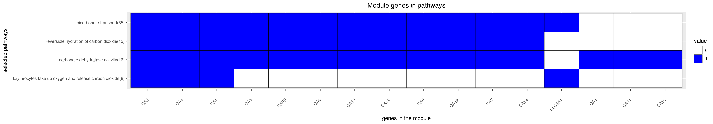

Back to main page
DREAM Module Identification Challenge – Consensus modules
PPI-STRING_Consensus_mod115
| Assigned name |
NA |
| Network |
PPI-STRING |
| Module ID |
PPI-STRING_Consensus_mod115 |
| Module size |
17 genes |
|
Module genes
This module comprises the following genes:
| Gene ID |
Gene Symbol |
Gene Name |
| 759
|
CA1
|
carbonic anhydrase 1
|
| 56934
|
CA10
|
carbonic anhydrase 10
|
| 770
|
CA11
|
carbonic anhydrase 11
|
| 771
|
CA12
|
carbonic anhydrase 12
|
| 377677
|
CA13
|
carbonic anhydrase 13
|
| 23632
|
CA14
|
carbonic anhydrase 14
|
| 760
|
CA2
|
carbonic anhydrase 2
|
| 761
|
CA3
|
carbonic anhydrase 3
|
| 762
|
CA4
|
carbonic anhydrase 4
|
| 763
|
CA5A
|
carbonic anhydrase 5A
|
| 340591
|
CA5B
|
carbonic anhydrase 5B pseudogene 1
|
| 765
|
CA6
|
carbonic anhydrase 6
|
| 766
|
CA7
|
carbonic anhydrase 7
|
| 767
|
CA8
|
carbonic anhydrase 8
|
| 768
|
CA9
|
carbonic anhydrase 9
|
| 388695
|
LYSMD1
|
LysM domain containing 1
|
| 6521
|
SLC4A1
|
solute carrier family 4 member 1 (Diego blood group)
|
|
Functional annotation
Modules were tested for enrichment in functional and pathway annotations using two complementary approaches:
1. To select a small number of specific / non-redundant annotations for each module, a regression-based approach was used;
2. To obtain the complete set of enriched annotations, an extension of Fisher’s exact test that takes annotation bias into account was employed (Wallenius’ non-central hypergeometric distribution).
Most specific annotations for this module
1Regression coefficient
2Fisher’s exact test nominal P-value
3Annotation source (Reactome, GO biological process (BP), molecular function (MF) and cellular component (CC))
4GO category or Reactome pathway
5High-level branch of annotation tree
Gene membership

All enriched annotations
Gene Ontology
11Nominal enrichment p-value (Wallenius’ noncentral hypergeometric distribution)
2FDR corrected p-value (Benjamini-Hochberg)
Reactome
| P-value1 |
FDR2 |
Term |
| 0.00e+00
|
0.00e+00
|
REVERSIBLE HYDRATION OF CARBON DIOXIDE
|
| 0.00e+00
|
0.00e+00
|
REVERSIBLE HYDRATION OF CARBON DIOXIDE
|
| 9.78e-03
|
7.88e-01
|
REGULATION OF HYPOXIA INDUCIBLE FACTOR HIF BY OXYGEN
|
|
11Nominal enrichment p-value (Wallenius’ noncentral hypergeometric distribution)
2FDR corrected p-value (Benjamini-Hochberg)
Mouse mutant phenotypes
11Nominal enrichment p-value (Wallenius’ noncentral hypergeometric distribution)
2FDR corrected p-value (Benjamini-Hochberg)
Generated on: Thu Aug 30 17:25:24 2018 - R2HTML